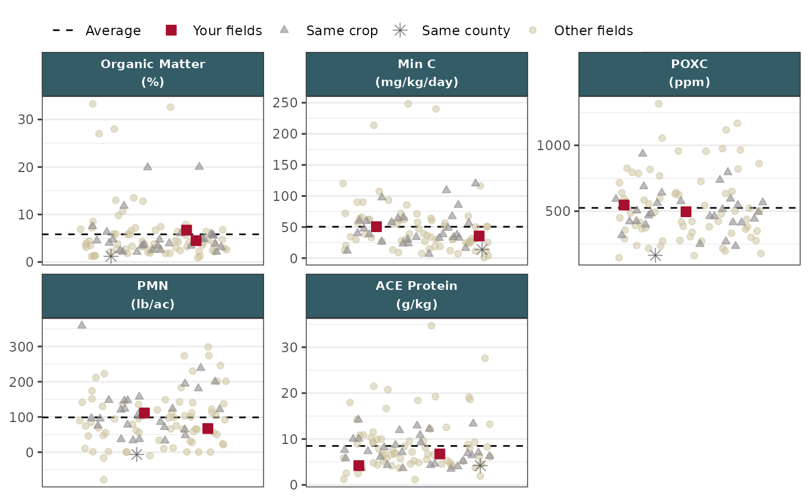
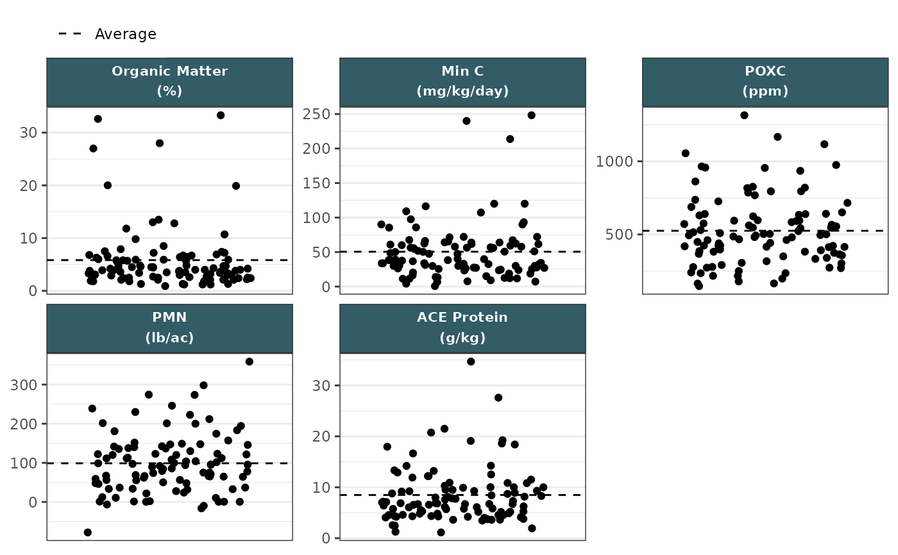

Define styles for producer's samples versus all samples
Usage
set_scales(
plot,
primary_color = "#a60f2d",
secondary_color = "#3E3D3D",
other_color = "#ccc29c"
)Arguments
- plot
ggplotobject to apply scales to.- primary_color
Color of producer's sample points. Defaults to WaSHI red
- secondary_color
Color of sample points with
"Same crop"or"Same county"values in thecategorycolumn. Defaults to WaSHI gray.- other_color
Color of sample points with
"Other fields"value incategorycolumn. Defaults to WaSHI tan.
Examples
# Read in wrangled example plot data
df_plot_path <- soils_example("df_plot.RDS")
df_plot <- readRDS(df_plot_path)
# Subset df to just biological measurement group
df_plot_bio <- df_plot |>
dplyr::filter(measurement_group == "biological")
# Make strip plot
make_strip_plot(
df_plot_bio,
x = dummy,
y = value,
id = sample_id,
group = abbr_unit,
tooltip = label,
color = category,
size = category,
alpha = category,
shape = category
) |>
set_scales() +
theme_facet_strip(body_font = "sans")

# Example without setting scales
make_strip_plot(
df_plot_bio,
x = dummy,
y = value,
id = sample_id,
group = abbr_unit,
tooltip = label
) +
theme_facet_strip(body_font = "sans")
